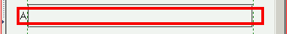
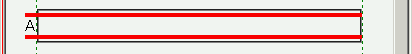

body要素の子孫要素でマージンを負数にしてbody要素のボックスからはみ出すようにした場合、標準モードではbody要素のボックスをはみ出す部分がレンダリングされない。
<div style="margin:0 -2%; border:4px solid red;">A</div>
div要素は左右マージンを負の値にしているので、body要素のボックスをはみ出すことになります。
緑色の破線はbody要素に設定したボーダーです。
Moz1.0での表示（標準モード）
WinIE6.0での表示（標準モード）
body要素の外側に文字列などが配置される場合はその部分がレンダリングされます（例示では左端の文字'A'がある部分）。
WinIE6.0標準モードで発生するバグです。IE6.0互換モード及び5.5以前では発生しません。